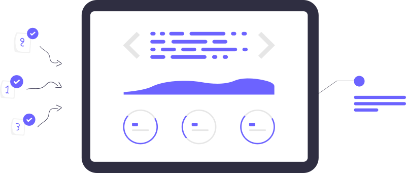
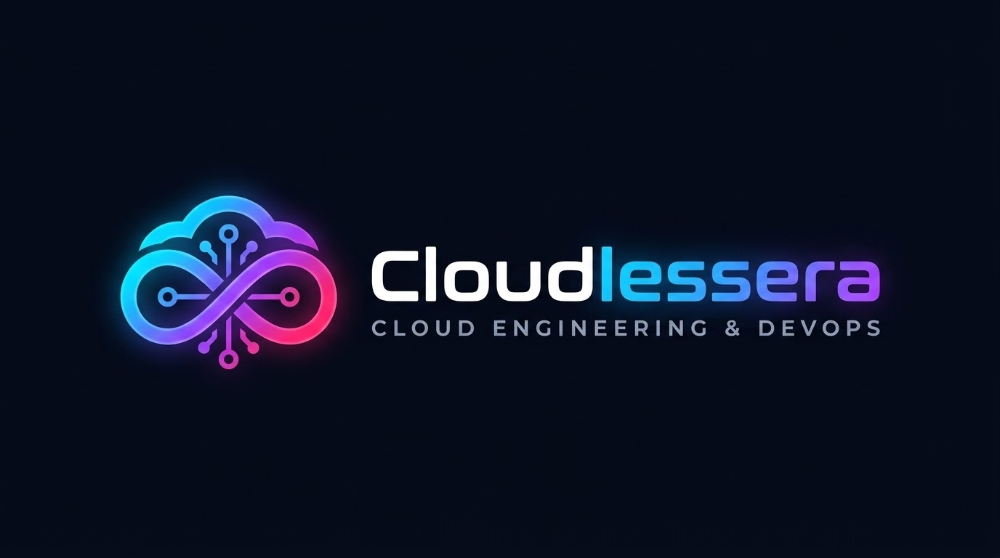
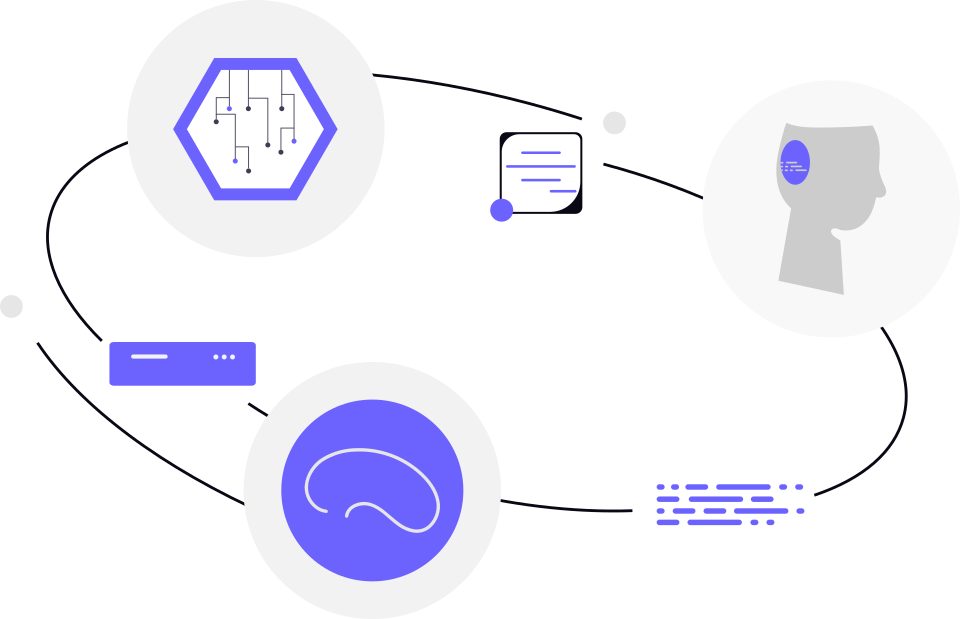
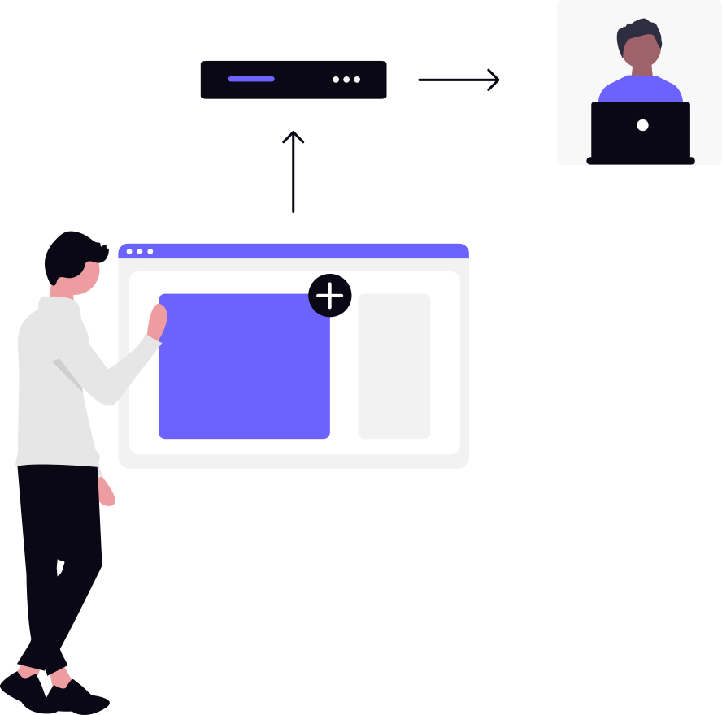
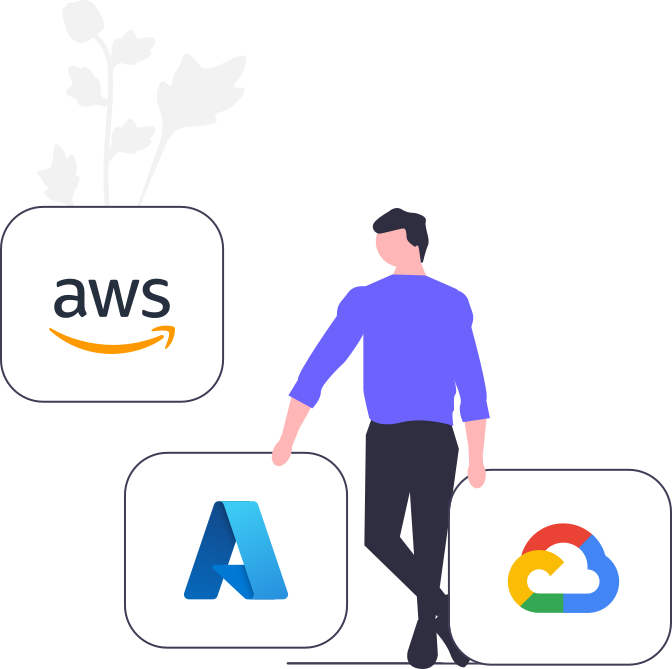

Linux & Terminal Mastery
Navigating Ubuntu WSL, mastering Bash scripts, managing permissions, and running terminal text editors.
- Shell Navigation & Pipelines
- File Permissions & Users
- Automation Scripts


Hands-on technical classes, live Linux command-line mastery, and real-world CI/CD automation pipelines. Learn by building real systems.

Navigating Ubuntu WSL, mastering Bash scripts, managing permissions, and running terminal text editors.

Version control best practices, branch workflows, PAT authentication, and automating site builds via GitHub Actions.

Architecting production-ready frontends with HTML5, CSS Glassmorphism, domain routing, and CDN edge delivery.